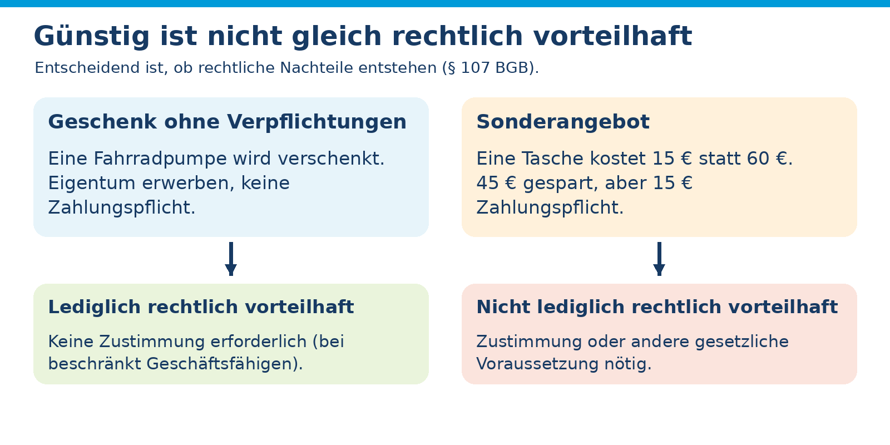
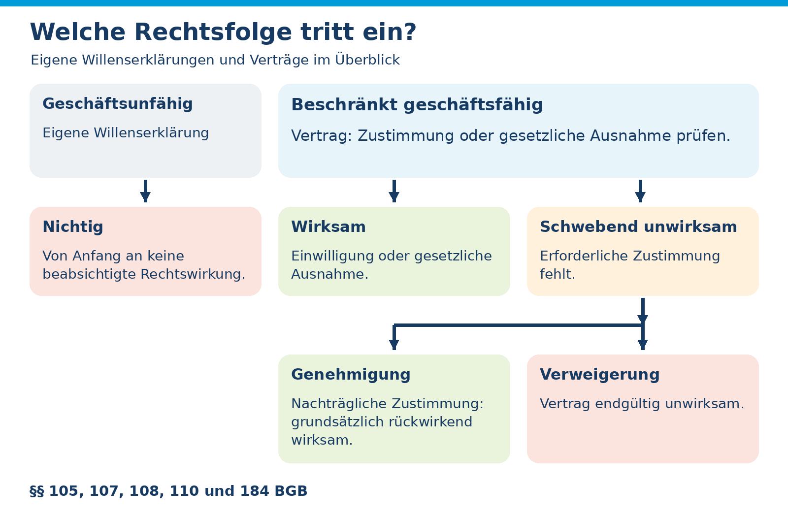

Zur MaterialübersichtRechts- und
Geschäftsfähigkeit im Verkauf
M02.1 – Rechtsfähigkeit und Geschäftsfähigkeit
Rechtsfähigkeit und
Geschäftsfähigkeit
Leitfrage: Warum kann ein Baby Eigentümer sein, aber
nicht selbst kaufen?
Rechtsfähigkeit bedeutet, Träger von Rechten und Pflichten sein zu
können. Sie beginnt mit Vollendung der Geburt. Auch ein Baby kann
Eigentum erwerben oder erben. Geschäftsfähigkeit bedeutet dagegen,
selbstständig wirksame Rechtsgeschäfte vorzunehmen. Mit 18 Jahren ist
man volljährig und im Regelfall voll geschäftsfähig. Eine
Willenserklärung ist eine Äußerung, die auf eine rechtliche Folge
gerichtet ist. Sie kann mündlich, schriftlich oder durch eindeutiges
Verhalten erfolgen. Ein Kaufvertrag entsteht durch zwei übereinstimmende
Willenserklärungen: Antrag und Annahme. Der Verkäufer schuldet Übergabe
und Eigentumsverschaffung, der Käufer Zahlung und Abnahme.
Beispiel bei Global Bike: Ein Mitarbeiter schenkt
seinem neugeborenen Patenkind ein Fahrrad; die Eltern nehmen es in
dessen Namen an. Eine 19-jährige Kundin kann dagegen selbst ein Fahrrad
bestellen.
| Rechte und Pflichten haben |
Wirksame Rechtsgeschäfte selbst
vornehmen |
| Ab Vollendung der Geburt |
Im Regelfall vollständig ab 18 |
 Rechtsfähigkeit und
Geschäftsfähigkeit
Rechtsfähigkeit und
Geschäftsfähigkeit
Antrag → übereinstimmende Annahme → Kaufvertrag
Gesetzliche Grundlage
§ 1 BGB: Die Rechtsfähigkeit des Menschen beginnt mit der Vollendung
der Geburt.
§ 2 BGB: Die Volljährigkeit tritt mit der Vollendung des 18.
Lebensjahres ein.
Merke: Rechte haben und selbst wirksam handeln sind
nicht dasselbe.
Kurz nachgedacht: Warum kann ein Baby Eigentümer
eines Fahrrads sein, aber selbst kein Fahrrad kaufen?
M02.2 – Die drei Stufen der Geschäftsfähigkeit
Die drei Stufen der
Geschäftsfähigkeit
Leitfrage: Welche Bedeutung hat das Alter?
Unter sieben Jahren sind Kinder geschäftsunfähig. Ihre eigenen
Willenserklärungen sind nichtig, auch bei kleinen Einkäufen. Eltern
können in ihrem Namen handeln. Ab sieben bis einschließlich 17 Jahren
sind Minderjährige beschränkt geschäftsfähig. Verträge können
insbesondere bei lediglich rechtlichem Vorteil, Zustimmung oder unter
den Voraussetzungen des § 110 BGB wirksam sein. Fehlt die erforderliche
Zustimmung, ist ein Vertrag zunächst grundsätzlich schwebend unwirksam.
Ab 18 Jahren besteht im Regelfall volle Geschäftsfähigkeit.
Beispiel bei Global Bike: Ein vierjähriges Kind
möchte einen Reflektor für 2 Euro kaufen: seine eigene Erklärung ist
nichtig. Ein 13-Jähriger darf mit vorheriger Zustimmung einen
Fahrradcomputer auf Rechnung kaufen. Eine 20-Jährige benötigt keine
Zustimmung ihrer Eltern.
| Geschäftsunfähig |
Beschränkt geschäftsfähig |
Im Regelfall voll geschäftsfähig |
| Eigene Erklärung nichtig |
Unter Voraussetzungen wirksam |
Selbstständig wirksam |
 Die drei Stufen der
Geschäftsfähigkeit
Die drei Stufen der
Geschäftsfähigkeit
Gesetzliche Grundlage
§ 104 Nr. 1 BGB (Auszug): Geschäftsunfähig ist: 1. wer nicht das
siebente Lebensjahr vollendet hat, […]
§ 105 Abs. 1 BGB: Die Willenserklärung eines Geschäftsunfähigen ist
nichtig.
§ 106 BGB: Ein Minderjähriger, der das siebente Lebensjahr vollendet
hat, ist nach Maßgabe der §§ 107 bis 113 in der Geschäftsfähigkeit
beschränkt.
Merke: Das Alter bestimmt, welche Voraussetzungen
für wirksames Handeln gelten.
Kurz nachgedacht: Warum spielt das Alter eine Rolle,
obwohl ein Kunde genügend Geld besitzt?
M02.3 – Geschenke und rechtliche Vorteile
Geschenke und rechtliche
Vorteile
Leitfrage: Ist ein günstiges Geschäft rechtlich
vorteilhaft?
Lediglich rechtlich vorteilhaft bedeutet, dass keine rechtlichen
Nachteile entstehen. Beschränkt Geschäftsfähige dürfen solche Geschäfte
ohne Zustimmung vornehmen. Ein gewöhnliches Geschenk ohne
Verpflichtungen ist lediglich rechtlich vorteilhaft. Ein Kauf hingegen
begründet eine Zahlungspflicht, auch wenn der Preis sehr günstig ist.
Ein wirtschaftlicher Vorteil ist daher nicht dasselbe wie ein lediglich
rechtlicher Vorteil. Ein Geschenk mit kostenpflichtigem Abonnement ist
ebenfalls nicht lediglich rechtlich vorteilhaft.
Beispiel bei Global Bike: Eine 12-Jährige erhält
eine Fahrradpumpe ohne Verpflichtungen. Ein 16-Jähriger erhält einen
Fahrradcomputer nur bei Abschluss eines kostenpflichtigen Serviceabos.
Eine reduzierte Tasche für 15 statt 60 Euro spart Geld, verpflichtet
aber zur Zahlung.
| Recht erwerben, keine Nachteile |
Preis sparen, Zahlungspflicht |
| Lediglich rechtlich vorteilhaft |
Nicht lediglich rechtlich vorteilhaft |

Rechtlicher und wirtschaftlicher
Vorteil
Gesetzliche Grundlage
§ 107 BGB: Der Minderjährige bedarf zu einer Willenserklärung, durch
die er nicht lediglich einen rechtlichen Vorteil erlangt, der
Einwilligung seines gesetzlichen Vertreters.
Merke: Entscheidend sind rechtliche Folgen, nicht
der Preis.
Kurz nachgedacht: Warum ist ein Sonderangebot nicht
automatisch lediglich rechtlich vorteilhaft?
M02.4 – Wenn die Eltern zustimmen müssen
Wenn die Eltern zustimmen
müssen
Leitfrage: Wann ist die Zustimmung entscheidend?
Einwilligung ist die vorherige Zustimmung. Ein damit erlaubter Kauf
auf Rechnung ist bereits wirksam, auch ohne Zahlung. Genehmigung ist die
nachträgliche Zustimmung. Fehlt die erforderliche Einwilligung und
greift keine Ausnahme, ist der Vertrag zunächst schwebend unwirksam.
Eine Genehmigung macht ihn grundsätzlich rückwirkend wirksam. Wird sie
verweigert, ist der Vertrag endgültig unwirksam; aus ihm kann keine
Kaufpreiszahlung verlangt werden. Bereits ausgetauschte Leistungen
müssen gegebenenfalls rückabgewickelt werden. Vertiefung: Fordert Global
Bike die gesetzlichen Vertreter nach § 108 Abs. 2 zur Erklärung auf,
gilt die Genehmigung nach zwei Wochen ab Empfang der Aufforderung ohne
Genehmigung als verweigert.
Beispiel bei Global Bike: Ein 14-Jähriger darf
vorher ausdrücklich ein Schloss auf Rechnung kaufen. Eine 15-Jährige
bestellt eine Tasche ohne Zustimmung; später genehmigen die Eltern den
Vertrag gegenüber Global Bike.
| Wirksam |
Vertrag entfaltet Rechtswirkung |
| Nichtig |
Von Anfang an keine beabsichtigte
Rechtswirkung |
| Schwebend unwirksam |
Wirksamkeit noch offen |
| Endgültig unwirksam |
Etwa nach verweigerter Genehmigung |

Rechtsfolgen im Überblick
Einwilligung → Kauf → wirksam
Kauf ohne erforderliche Zustimmung → schwebend unwirksam → Genehmigung:
wirksam / Verweigerung: endgültig unwirksam
Gesetzliche Grundlage
§ 108 Abs. 1 BGB: Schließt der Minderjährige einen Vertrag ohne die
erforderliche Einwilligung des gesetzlichen Vertreters, so hängt die
Wirksamkeit des Vertrags von der Genehmigung des Vertreters ab.
§ 183 BGB (Auszug): Die vorherige Zustimmung (Einwilligung) ist bis zur
Vornahme des Rechtsgeschäfts widerruflich, soweit nicht aus dem ihrer
Erteilung zugrunde liegenden Rechtsverhältnis sich ein anderes
ergibt.
§ 184 Abs. 1 BGB: Die nachträgliche Zustimmung (Genehmigung) wirkt auf
den Zeitpunkt der Vornahme des Rechtsgeschäfts zurück, soweit nicht ein
anderes bestimmt ist.
Merke: Einwilligung vorher, Genehmigung nachher.
Kurz nachgedacht: Welche Bedeutung hat der Zeitpunkt
der Zustimmung?
M02.5 – Der Taschengeldparagraph
Der Taschengeldparagraph
Leitfrage: Wann reicht die Zahlung aus?
§ 110 BGB ermöglicht beschränkt Geschäftsfähigen wirksame Verträge
ohne ausdrückliche Zustimmung zum konkreten Kauf. Die Mittel müssen vom
gesetzlichen Vertreter oder mit dessen Zustimmung von Dritten für diesen
Zweck oder zur freien Verfügung überlassen worden sein. Die
vertragsmäßige Leistung muss vollständig erbracht sein. Es gibt keine
feste Preisgrenze. Bei gewöhnlichen Käufen kommt es auf die vollständige
Zahlung an, nicht auf Bar- oder Kartenzahlung. Bei Rechnung oder Raten
bleibt der Vertrag ohne erforderliche Zustimmung zunächst schwebend
unwirksam. Nach vollständiger Leistung mit zulässigen Mitteln kann er
von Anfang an wirksam gelten, sofern die Genehmigung nicht bereits
verweigert wurde. § 110 gilt nicht für Geschäftsunfähige.
Beispiel bei Global Bike: Ein 12-Jähriger zahlt eine
Pumpe für 18 Euro vollständig mit frei verfügbarem Taschengeld. Eine
15-Jährige nutzt dagegen Geld ausschließlich für eine Klassenfahrt für
Zubehör: § 110 greift nicht. Ein 16-Jähriger zahlt Zubehör für 80 Euro
in vier Raten zu 20 Euro.
| 80 € sofort |
Erfüllt |
| 2 von 4 Raten: 40 € |
Noch nicht erfüllt |
| 4 von 4 Raten: 80 € |
Erfüllt |
 Taschengeldparagraph:
Zahlungsstand
Taschengeldparagraph:
Zahlungsstand
Gesetzliche Grundlage
§ 110 BGB: Ein von dem Minderjährigen ohne Zustimmung des
gesetzlichen Vertreters geschlossener Vertrag gilt als von Anfang an
wirksam, wenn der Minderjährige die vertragsmäßige Leistung mit Mitteln
bewirkt, die ihm zu diesem Zweck oder zu freier Verfügung von dem
Vertreter oder mit dessen Zustimmung von einem Dritten überlassen worden
sind.
Merke: Vollständige Leistung und zulässige Mittel
sind entscheidend.
Kurz nachgedacht: Warum reicht vollständige Zahlung
allein nicht aus?
Gesetzestexte im
Bürgerlichen Gesetzbuch
Ausschnitt der Boardübersicht. Die drei Produktformen und das fachliche Beispiel im Überblick.Begriffe zum Fall
Geschäftsunfähigkeit – Die eigene Willenserklärung ist nach § 105 Abs. 1 grundsätzlich nichtig. Bei einem Kind unter sieben Jahren kommt es auf das Alter an, auch wenn der Betrag klein ist.
Beschränkte Geschäftsfähigkeit – Minderjährige ab sieben Jahren können unter bestimmten Voraussetzungen selbst wirksame Geschäfte abschließen. Beim Kauf einer 15-Jährigen kommt es unter anderem darauf an, welche Pflichten entstehen.
Lediglich rechtlicher Vorteil – Das Geschäft bringt keine rechtlichen Nachteile mit sich. Prüfen Sie beim Geschenk, ob daran eine rechtliche Verpflichtung hängt.
Schwebende Unwirksamkeit – Die Wirksamkeit eines Vertrags hängt noch von der erforderlichen Genehmigung ab. Bei einer Bestellung ohne erforderliche Zustimmung kann der Vertrag noch genehmigt werden.
Nichtigkeit – Die beabsichtigte Rechtswirkung tritt von Anfang an nicht ein. § 105 Abs. 1 beschreibt die Wirkung der Erklärung eines Geschäftsunfähigen.
Text als Markdown herunterladen · Zur Materialübersicht
![Jan Richter und Emma Fuchs prüfen den Kauf einer Fahrradlampe bei Minderjährigen. Unter 7 Jahren. Geschäftsunfähig. Die eigene Willenserklärung zum Kauf ist nichtig. 7 bis 17 Jahre. Beschränkt geschäftsfähig. Bei einem Kauf ist grundsätzlich die Zustimmung der gesetzlichen Vertretung nötig. Besondere Fälle. Zur freien Verfügung. Ein Kauf kann ohne Zustimmung wirksam sein, wenn die Zahlung vollständig mit dafür überlassenen oder frei verfügbaren Mitteln erfolgt. Fehlt die vorherige Zustimmung und greift keine Ausnahme, hängt die Wirksamkeit von der nachträglichen Genehmigung ab.](erklaerbilder/LS_2_3_Geschaeftsfaehigkeit_und_Kauf.png) Kauf einer Fahrradlampe durch Minderjährige
Kauf einer Fahrradlampe durch Minderjährige